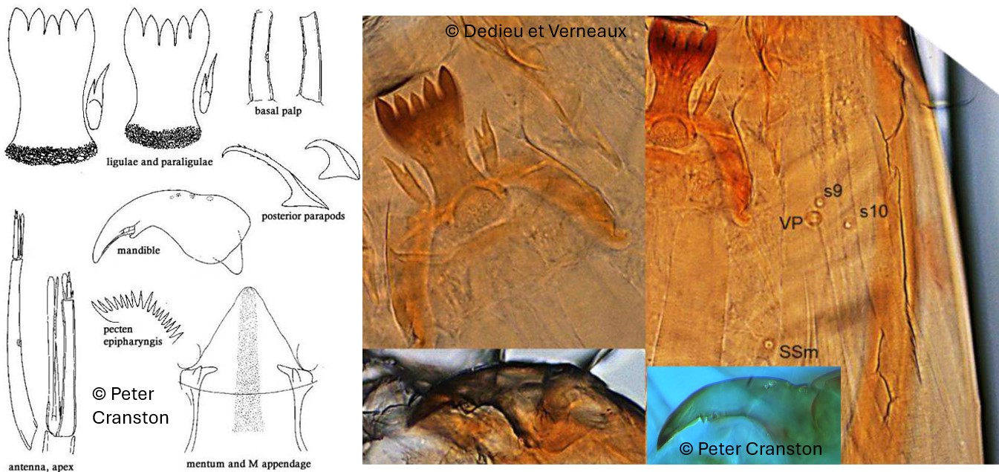

Larsia (Fittkau, 1962)

Indice Céphalique
0.60.
Ratio antennaire
3.4-4.5.
Mandibules
Mandibules fortement courbés, progressivement rétrécies vers l'apex. Dent interne bien développée. Mola bien développée.
Tubules anaux
3x aussi long que large.
Procercus
4-6x plus long que large, avec 7 soies apicales.
Parapode postérieur
Griffes toutes jaunes et simples ; Griffes les plus grandes avec de petites épines sur la marge interne et / ou externe.
Soies céphaliques ventrales
S10 latéral à postérolatéral à S9. VP1 S9 et S10 disposées en triangle.
Ecologie
Les larves de Larsia sont sténothermes froid et se rencontrent dans de nombreux habitats, notamment les sources, les fossés, les ruisseaux, les petites eaux stagnantes et la zone littorale des lacs.
Espèces recensées en France
2 : L. atrocincta, L. culticalcar.